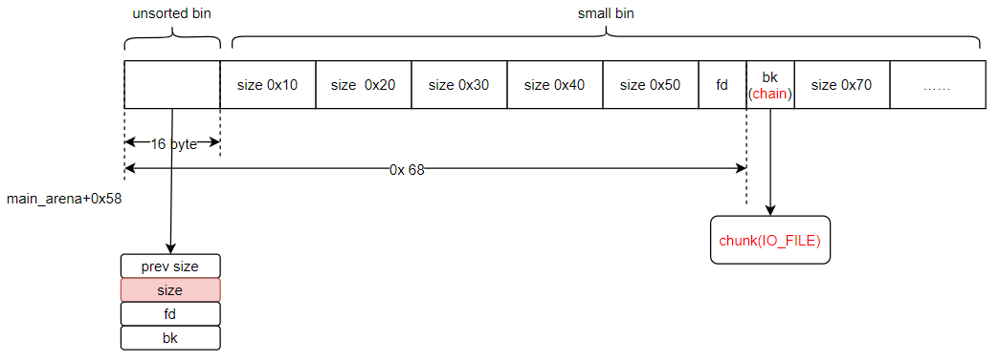
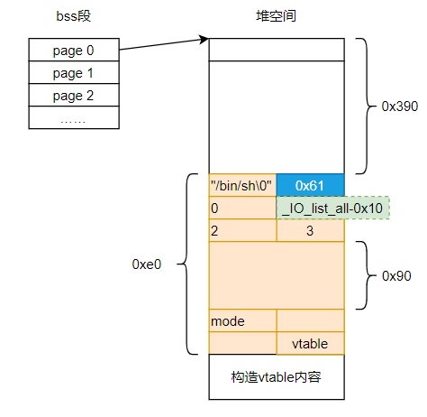

pwnable.tw 之 bookwriter
参考wp：
1 分析
查看二进制各项属性：
1 | file bookwriter |
- 64位二进制程序，动态链接，去了符号表
- got表不可写
- 栈不可执行，开启栈canary
- 地址随机化未开启
使用IDA分析二进制源码逻辑，存在四个功能，分别是：
- add：添加page和内容
- view：查看page的内容
- edit：更改page的内容，并重新调整大小值size
- information：显示作者姓名
漏洞点有以下几个：
- 未进入while循环前输入作者姓名时，结束符控制有问题。导致后续打印该字符串时可越界读。
- add函数中的if(i>8)判断有误，导致bss段原本存放size的位置可被覆盖为堆地址
- edit函数中同样存在第一个问题，在输入字符串时，结束符控制有问题，导致计算strlen时产生一个大于原本字符串的值，后续可以越界写。
2 利用
2.1 泄露堆地址和libc基址
泄露堆地址和libc测试代码：
1 | #coding=utf-8 |
2.2 get shell
通过以上代码，已经可以实现往第0个堆上写超长数据，从而覆盖堆空间其他部分了。
现在还需要解决几个问题：
（1）通过unsortedbin attack将IO_list_all覆盖为我们可写的内存地址，从而伪造IO_FILE_plus结构体
问题1：但是通过unsortedbin attack只能将IO_list_all覆盖为mainarena+0x58（64位），该空间是我们不可控的，且空间的条件内不满足执行_IO_OVERFLOW，因此会转去寻找chain这个地址。
（2）此时chain的位置正好是small bin的区域，因此我们需要构造一个能控制的small bin chunk
问题2：怎么获得这个可控制的small bin chunk呢？将unsorted bin chunk中的chunk大小改一下，改成small bin大小，这样从unsorted bin中拆下的chunk就会被链接到对应大小的small bin上。
问题3：这个大小应该多大呢？根据（1）中chain的位置来确定，本题是0x60。
unsorted bin attack
参考ctf-wiki：unsorted bin attack
利用该方法可以往任意地址写一个固定的值。本题中可以将main_arena+0x58的地址写到IO_list_all上（将IO_list_all - 0x10的地址放在unsorted chunk的bk处），从而将IO_FILE_plus转移。由于main_arena不满足条件，会继续转移。IO_FILE中chain的位置正好在0x60大小small bin的bk处。如下图，构造一个0x60大小的unsorted bin，malloc时会将该unsorted bin放到chunk(IO_FILE)位置。而unsorted bin chunk的大部分区域我们都可以通过堆溢出来任意写。

I/O FILE
以上分析可知，我们现在需要在unsorted bin chunk里布局IO_FILE_plus结构体，有一些限制条件，在参考链接中有提及，这里不复述。因此，通过堆溢出在第0号堆块上布局如下：

按照如上构造后，在gef中调试打印如下：
1 | gef➤ heap chunks |
3 EXP
1 | #coding=utf-8 |